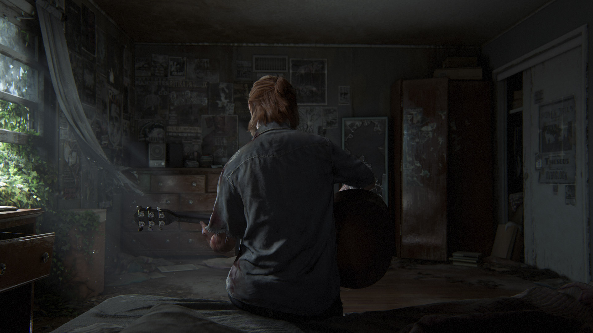

Uma aventura intensa, dramática e emotiva espera por ti
a Ellie e o Joel regressam para uma viagem épica,
na continuacão do jogo da Naughty
Dog aclamado pela crítica.
A equipe precisou criar novos motores de jogo para The Last of Us a fim de satisfazerem suas necessidades. A inteligência artificial foi criada para coordenar se com os jogadores em um nível íntimo, indo de encontro aos elementos de acao de outros jogos; a adicao de Ellie como uma inteligencia artificial foi uma grande contribuicao para o motor de jogo. A equipe colocou intencionalmente uma característica em que Ellie sempre permanece perto de Joel com o objetivo de impedir que ela seja vista como um fardo. O programador Max Dyckhoff afirmou que tentou imaginar as experiências da personagem no decorrer dos eventos do jogo em uma tentativa de alcancar maior realismo.
A inteligência artificial dos inimigos foi considerada uma das partes mais importantes de The Last of Us, sendo desenvolvida para estudar o ambiente ao redor e encontrar táticas para atacar o jogador, randomicamente escolhendo uma baseada nos dados. Essa singularidade da jogabilidade foi um fator na tentativa de fazer com que os jogadores sentissem emocoes para com os oponentes. O motor de iluminacao também foi criado para incluir luzes de preenchimento, em que os raios do Sol entram em espacos e refletem nas superfícies.

primeira imagem do jogo
imagem do primeiro trailer do jogo
imagem do primeiro trailer do jogo
trailer do jogo